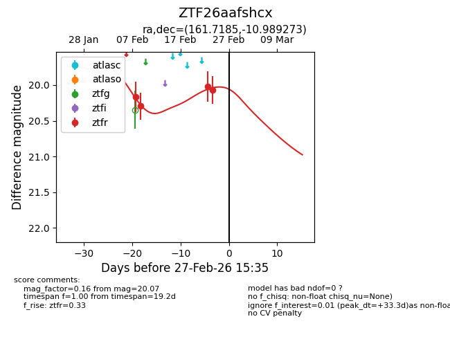
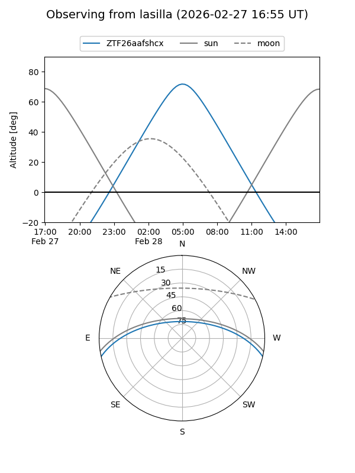
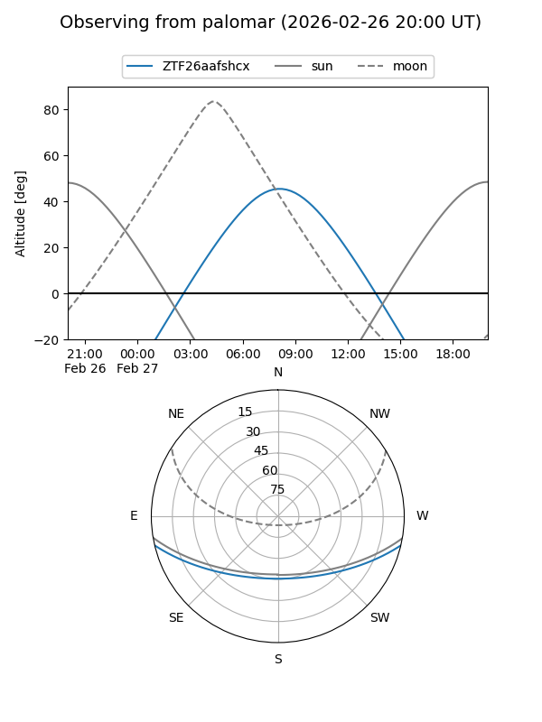
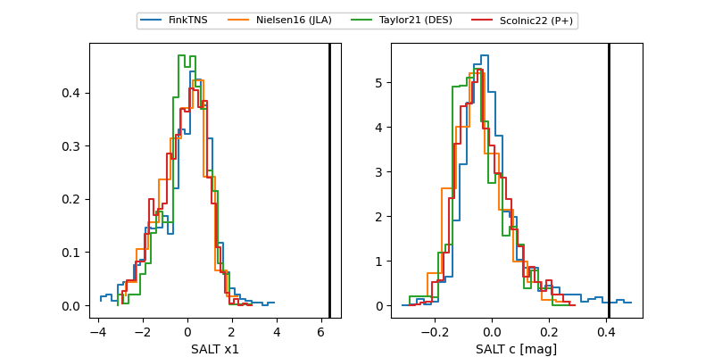

ZTF26aafshcx
Target ZTF26aafshcx at 2026-02-27 15:39
Aliases and brokers:
FINK: link
Lasair: link
ALeRCE: link
alt names
ZTF26aafshcx (ztf,fink_ztf)
Coordinates:
equatorial (ra, dec) = 161.7185,-10.98927
equatorial (HMS+DMS) = 10:46:52.44,-10:59:21.38
galactic (l, b) = (260.3678,+41.36460)
Flags:
Photometry:
last ztfr=20.07
4 ztfr detections
Lightcurve

Visibility


Additional plots
